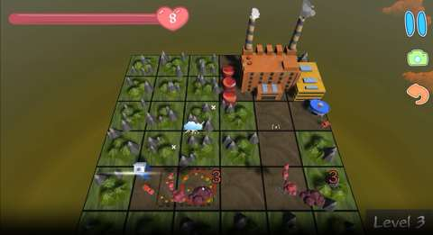

Project Case Study
Paper Weather
An educational action game in which players combine weather phenomena to fight pollution and help restore the environment.
Multiplayer experience
The project includes multiple levels designed to work in multiplayer. In the version I worked on, a teacher could guide a group of up to 20 students and advance the activity for everyone, while students could not trigger a group skip.

My contribution
I focused on front-end development, level creation and multiplayer interactions. I integrated Colyseus into the game, replacing its earlier Photon PUN connection, and worked on connecting the game client with the multiplayer service.